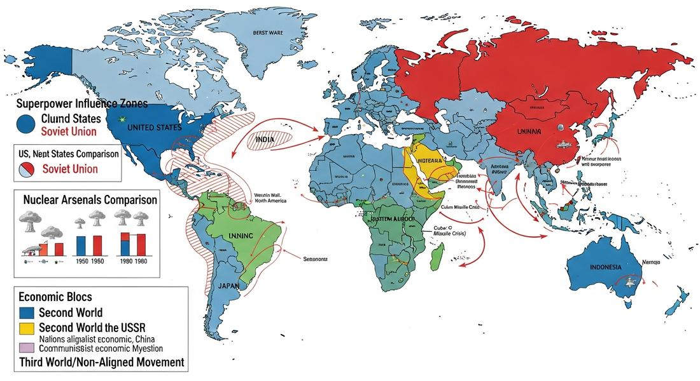

8.9 Causation in the Age of the Cold War and Decolonization
- LO-A: Topic 8.9 is a synthesis and argumentation topic — Like all final unit topics (4.8, 5.10, 6.8, 7.9), this is designed to develop complex argumentation using evidence from the whole unit. The LO asks you to assess the EXTENT to which Cold War effects were similar in both hemispheres. The LO asks for comparison across hemispheres — LO K: "Explain the extent to which the effects of the Cold War were similar in the Eastern and Western Hemispheres." Think: What was common worldwide? What was different between, say, Eastern Europe vs. Latin America vs. Southeast Asia? Key global similarity: proxy wars everywhere — Eastern hemisphere (Korea, Vietnam, Angola, Afghanistan) and Western hemisphere (Nicaragua, Cuba, Chile) all experienced Cold War proxy conflicts. The pattern of superpower intervention in local conflicts was hemispheric-crossing. Key difference: decolonization primarily in Eastern hemisphere — The breakdown of European empires was mainly an African/Asian phenomenon (Eastern hemisphere). The Western hemisphere had mostly already decolonized in the 19th century, so the Cold War played out against different historical backgrounds on each side.
Try each question before revealing the answer.
1. In what ways were the effects of the Cold War similar in both the Eastern and Western Hemispheres?
2. In what ways were the effects of the Cold War DIFFERENT between the Eastern and Western Hemispheres?
3. The CED says the skill for Topic 8.9 is "argumentation" — specifically "corroborating, qualifying, or modifying an argument using diverse and alternative evidence." What does this look like on the AP exam?
- Explain the extent to which the effects of the Cold War were similar in the Eastern and Western Hemispheres. Skill: Argumentation — corroborate, qualify, or modify an argument using diverse and alternative evidence to develop a complex argument.
Tap a term for its definition.
-
Definition: A conflict in which two major powers (US and USSR) support opposing sides in a regional war rather than fighting each other directly. Significance: Proxy wars appeared in both hemispheres: Korea, Vietnam, Angola, and Afghanistan (Eastern); Cuba, Nicaragua, Chile, and various Latin American conflicts (Western). The proxy war pattern was the most consistent Cold War similarity across hemispheres.
-
Definition: The process by which Asian and African colonial territories gained independence from European empires, primarily between 1945 and 1975. Significance: Decolonization was primarily an Eastern hemisphere phenomenon — it occurred simultaneously with the Cold War and the two processes interacted: the US and USSR both sought to win newly independent nations to their side, while anti-colonial movements used Cold War rhetoric to gain superpower support.
-
Definition: A grouping of nations — primarily newly independent Asian and African states — that sought to remain neutral in the Cold War rather than aligning with either the US or USSR. Founded at the Bandung Conference (1955). Significance: The Non-Aligned Movement drew predominantly from Eastern hemisphere nations; this is one reason Cold War dynamics were more complex in the Eastern hemisphere, where new nations had ideological leverage that already-independent Western hemisphere nations lacked.
-
Definition: A region where a major power exercises dominant political, economic, or military control, even if it does not formally govern the territory. Significance: The US exercised a sphere of influence in Latin America (Western hemisphere) and the USSR controlled Eastern Europe directly through the Warsaw Pact (Eastern hemisphere). Both superpowers intervened in their respective spheres to prevent governments from shifting ideological alignment.
-
Definition: The contest between two opposing systems — US-backed capitalism and democracy vs. Soviet-backed communism — for global influence and the allegiance of newly independent nations during the Cold War. Significance: Ideological competition was the one truly global similarity between hemispheres: both the US and USSR used economic aid, military alliances, propaganda, and covert action in both hemispheres to expand their respective ideological systems.
🌍🌎 The Central Question: Same Cold War, Different Experiences?
The Cold War was a global phenomenon — its ideological conflict, proxy wars, nuclear shadow, and economic competition touched virtually every corner of the world. But the LO for Topic 8.9 asks a specific and sophisticated question: to what extent were the Cold War's effects similar in the Eastern and Western Hemispheres? This question invites you to use the skill of argumentation — making a claim, supporting it with evidence, and qualifying it where the evidence reveals limits or complexity.
The honest answer is: partly similar, partly different. The similarities are real and significant. So are the differences. A strong AP response will articulate both, using specific evidence from multiple regions, and will make a defensible claim about the overall extent of similarity.

Image credit not specified.
AI-generated illustration (Google Gemini, 2025), commercially licensed.
🔗 What Was Similar Across Both Hemispheres?
1. Proxy Wars: The most concrete similarity is the pattern of proxy warfare — local conflicts shaped by US and Soviet intervention on opposing sides. In the Eastern hemisphere: Korean War (1950–53), Angolan Civil War (1975–2002), Soviet-Afghan War (1979–89). In the Western hemisphere: Cuban Revolution and US Bay of Pigs invasion (1961), Sandinista-Contras conflict in Nicaragua (1980s), US support for anti-communist regimes across Latin America. In both hemispheres, superpower competition weaponized local conflicts, prolonged them, and raised their human cost dramatically.
2. Superpower Interference in Internal Affairs: In both hemispheres, neither the US nor the USSR respected the sovereignty of smaller nations when strategic interests were at stake. The US-backed coup in Chile (1973) and CIA operations against leftist governments in Guatemala (1954) and Iran (1953) in the Eastern hemisphere paralleled Soviet military interventions in Hungary (1956), Czechoslovakia (1968), and Afghanistan (1979) in the Eastern hemisphere. Superpower willingness to override local sovereignty was a universal Cold War pattern.
3. State-Led Economic Development: In both hemispheres, governments took strong roles in guiding economic development — often as a direct response to Cold War pressures. Nasser's nationalization in Egypt, Nyerere's ujamaa in Tanzania, and India's mixed economy model (Eastern hemisphere) paralleled nationalist economic policies in Latin America — import substitution industrialization in Mexico, Brazil, and Argentina (Western hemisphere). The idea that independent states should control their own economic destiny, rather than leaving it to foreign investment, was a response to colonial and neocolonial experience across both hemispheres.
4. Nuclear Threat: The nuclear shadow fell over the entire globe. The Cuban Missile Crisis (1962) brought the Western hemisphere closest to nuclear war, but populations across the Eastern hemisphere — in Europe, Asia, and eventually across the developing world — also lived with the knowledge that superpower conflict could destroy civilization. Anti-nuclear movements (Campaign for Nuclear Disarmament in Britain, Japanese Gensuikyō) emerged on multiple continents.
↔️ Where Did Eastern and Western Hemisphere Experiences Diverge?
1. Decolonization: The single most significant difference between the hemispheres was that decolonization — the dissolution of European empires and the creation of dozens of new states — occurred primarily in the Eastern hemisphere. Africa and Asia experienced decolonization simultaneously with Cold War competition, creating a complex interaction: independence movements had to navigate Cold War pressures; newly independent states became arenas for superpower competition; and the Non-Aligned Movement emerged specifically from Eastern hemisphere newly independent nations trying to resist Cold War alignment.
The Western hemisphere had already largely decolonized in the 19th century (most Latin American nations achieved independence from Spain and Portugal between 1810 and 1825). So in the Western hemisphere, the Cold War played out through already-independent states — often reinforcing existing authoritarian governments or destabilizing elected ones — rather than shaping the creation of new states. This difference is fundamental: the Cold War was woven into the very birth of states in Africa and Asia in ways it simply wasn't in Latin America.
2. Communist Revolution: Successful communist revolutions — where communist parties actually seized state power — occurred primarily in the Eastern hemisphere (China, 1949; Vietnam, 1975; Korea's division). In the Western hemisphere, Cuba (1959) is the major exception, and even there, Fidel Castro did not publicly identify as communist until after taking power. US proximity and intervention consistently prevented successful communist takeovers across Latin America (though leftist governments won elections in Chile, Guatemala, and elsewhere before being overthrown). The geography of communist success was asymmetric.
3. Direct Soviet Military Presence: The Soviet Union directly controlled Eastern Europe through the Warsaw Pact, stationing troops in Poland, East Germany, Hungary, and other satellite states. Soviet military power was the visible foundation of communist governments in Eastern Europe. In the Western hemisphere, Soviet military presence was almost entirely absent — Cuba had Soviet missiles for 13 days in 1962, and Soviet advisors were present in Cuba, but the USSR never stationed significant military forces in the Western hemisphere. American military dominance in the Western hemisphere was matched by Soviet military dominance in Eastern Europe — but the Soviet sphere of influence in the Western hemisphere was far more limited.
🔗 How the Cold War and Decolonization Were Causally Connected
A sophisticated understanding of Unit 8 recognizes that the Cold War and decolonization were not simply simultaneous but causally connected — each shaped the other in multiple ways:
Nothing added yet. To attach a Google NotebookLM audio overview, video overview, or infographic to this topic: open this file — build/data/content/ap-world-history/8-9.json — and add an entry to notebookLmResources with a title and a shareable link (or paste an embed <iframe> directly into this block in the generated HTML file if you're editing the page by hand instead).
- Proxy wars occurred exclusively in the Eastern hemisphere, while the Western hemisphere experienced only diplomatic confrontations
- Decolonization — the simultaneous creation of dozens of new states — occurred primarily in the Eastern hemisphere, adding complexity absent in the Western hemisphere where nations had been independent for over a century
- Economic development strategies were fundamentally different — Eastern hemisphere nations adopted communism while Western hemisphere nations adopted capitalism
- Nuclear weapons were deployed only in the Eastern hemisphere, making nuclear anxiety a uniquely Eastern hemisphere experience
- The Non-Aligned Movement, which drew members from both Eastern and Western hemisphere nations
- The simultaneous timing of decolonization movements in Asia, Africa, and Latin America
- The pattern of superpower-backed proxy wars occurring in both hemispheres: the Korean War and Soviet-Afghan War in the east, and the Sandinista-Contras conflict and Cuban interventions in the west
- The adoption of communist economic policies by governments in both hemispheres
- Providing more examples of proxy wars in both hemispheres to strengthen the similarity claim
- Noting that the Cold War ended earlier in the Western hemisphere than in the Eastern hemisphere
- Arguing that the US was more aggressive in the Western hemisphere than the USSR was in the Eastern hemisphere
- Acknowledging that while superpower intervention patterns were similar, the Eastern hemisphere's simultaneous decolonization created qualitatively different political contexts that shaped how Cold War competition unfolded
- Newly independent governments' adoption of state-directed development — Nasser's nationalizations, Nyerere's ujamaa, Indira Gandhi's bank nationalizations — driven by the need to assert economic sovereignty in a Cold War context
- The Non-Aligned Movement's rejection of superpower military alliances
- The formation of NATO and the Warsaw Pact as competing military alliances
- The spread of communist revolutionary movements across Asia and Africa
- The Soviet invasion of Afghanistan, which occurred after most decolonization was complete
- The Korean War, which divided a single country between communist north and capitalist south
- Ho Chi Minh's Vietnamese independence movement, which was simultaneously anti-colonial and communist — making it impossible to separate Cold War competition from decolonization in this case
- The fall of the Berlin Wall in 1989, which occurred as the last wave of African decolonization was completing
📝 My Notes (edit this yourself — no AI needed)
This box is yours. Open this page's HTML file directly (in GitHub's editor or any text editor), find the <!-- MY-NOTES-START --> comment below, and type between the markers — corrections, extra context for this year's students, a link, anything. Changes show up as soon as you save and re-publish the file — nothing else on the page will change.
(Add your own notes, corrections, or extra context here.)